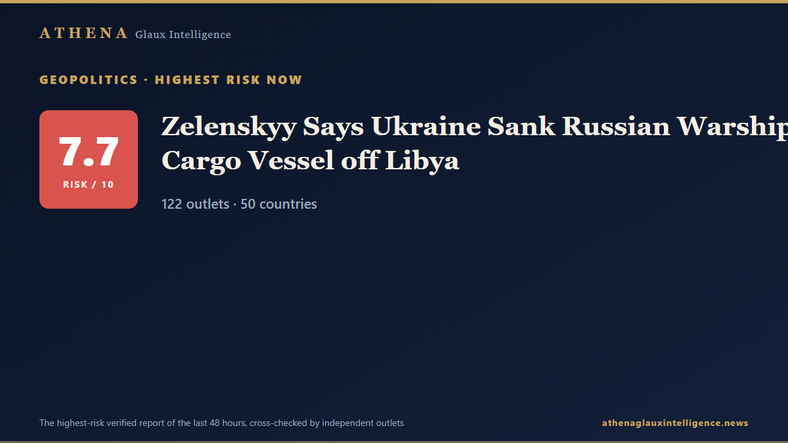
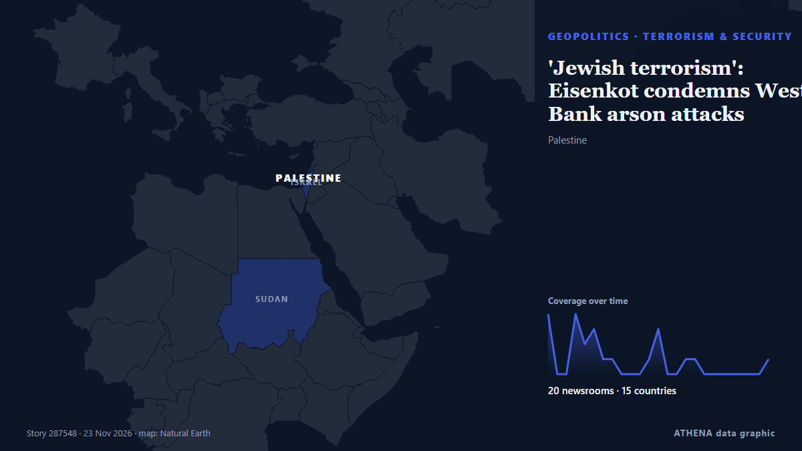

Κίνδυνος 7.7Αυξημένος
ATHENA Glaux Intelligence — Παγκόσμια ειδησεογραφική ανάλυση — κάθε αριθμός εξηγημένος
Γεωπολιτική
Όλη η Γεωπολιτική >Υψηλότερος κίνδυνος τώρα

Αυξανόμενος κίνδυνοςΑύξηση τις τελευταίες 24 ώρες
- A Draft of Armenia’s New Constitution Has Been Presented — Pashinyan to Deliver an AddressΚίνδυνος 0.0 → 3.2
- Hyderabad on high alert after email threatens 26/11-style terror attacksΚίνδυνος 3.0 → 6.6
- U.S. Forces Korea deploys Apache, Blackhawk helicopters for live-fire drills in JapanΚίνδυνος 2.4 → 6.1
Ναυτιλία & ναυσιπλοϊα
Γραφείο Ναυτιλίας >Υψηλότερος κίνδυνος τώρα
Κίνδυνος 7.6Αυξημένος
Endurance athlete swims in Strait of Hormuz to highlight Iran war's impact on wildlife
Δείτε τα στοιχεία ›
Πίνακας παρακολούθησηςΠεράσματα, λιμάνια και άλλες ναυτιλιακές αναφορές
- Strait of HormuzΔιαταραχήattack / strike · risk 7.6 · 22 newsrooms (72 h)
- Bab el-Mandeb / Red SeaΔιαταραχήattack / strike · risk 7.7 · 124 newsrooms (72 h)
- Danish Straits / BalticΔιαταραχήattack / strike · risk 7.7 · 124 newsrooms (72 h)
Κάθε είδηση, ελεγμένη σε πολλές χώρες.
Το ATHENA Glaux παρακολουθεί 632 ειδησεογραφικά μέσα σε όλο τον κόσμο. Μια είδηση γίνεται επαληθευμένο γεγονός μόνο όταν την αναφέρουν ανεξάρτητα μέσα. Κάθε γεγονός δείχνει ποιος το ανέφερε πρώτος και έναν βαθμό κινδύνου με τους λόγους του.
1.330γεγονότα σε 24 ώρες
632μέσα που παρακολουθούμε
35λεπτά ανάμεσα στις ενημερώσεις
Σεισμός ή πλημμύρα κοντά σας αυτή την εβδομάδα;
Γράψτε την πόλη σας και δείτε σεισμούς, πλημμύρες, καταιγίδες και επίσημες προειδοποιήσεις κοντά της, με λίστα κιτ έκτακτης ανάγκης 72 ωρών. Δωρεάν, χωρίς εγγραφή, και η περιοχή σας μένει στη συσκευή σας.
Αναφορές έρχονται από ανεξάρτητα μέσα — όταν δύο συναντηθούν στην ίδια ιστορία, γίνεται επιβεβαιωμένο γεγονός.
Πώς ελέγχει το ATHENA μια είδηση
- ΣυλλογήΟι αναφορές φτάνουν από ανεξάρτητα μέσα σε πολλές χώρες.
- ΑντιστοίχισηΌταν δύο μέσα συναντιούνται στην ίδια είδηση, γίνεται επαληθευμένο γεγονός.
- ΕξήγησηΚάθε γεγονός δείχνει ποιος ήταν πρώτος, πόσο εξαπλώθηκε και γιατί ο κίνδυνος είναι αυτός.
Παγκόσμια προοπτική κινδύνου
Εβδομαδιαίες και μηνιαίες επισκοπήσεις: τα γεγονότα υψηλότερου κινδύνου, οι τάσεις ανά τομέα και περιοχή και τι να παρακολουθήσετε.
Διαβάστε την προοπτική ›Ημερήσια ενημέρωση
Τα δέκα σημαντικότερα γεγονότα της ημέρας στον κόσμο, οι αυξανόμενοι κίνδυνοι και τα νέα γεγονότα, με κάθε αριθμό εξηγημένο.
Ανοίξτε τη σημερινή ενημέρωση ›
Γεωπολιτική'Jewish terrorism': Eisenkot condemns West Bank arson attacks
Israeli opposition leader Gadi Eisenkot has condemned Israeli settler attacks in the occupied West Bank as "Jewish terrorism". από The New Arab
6.3Σημασία
2.5Κίνδυνος · μέτριος
88%Βεβαιότητα
Οι τίτλοι των ειδήσεων παρουσιάζονται στα αγγλικά, όπως δημοσιεύτηκαν.
Τεχνολογία & Κυβερνοασφάλεια
South Korea vows to stabilise stock market after KOSPI drops 5%
SEJONG: South Korea reiterated plans on Monday to stabilise its stock market if needed, as the KOSPI plummeted 5% and Finance Minister Lee Hyoung-il projected solid economic growth next year. από Business Recorder
Οικονομία & Αγορές
Israeli attacks on medics in occupied West Bank surge by 350%: Rights group
Physicians for Human Rights Israel says medics face 'dangerous escalation' in violence from soldiers and settlers. από Al Jazeera English
Χορηγούμενο
Cybernetics and Artificial Intelligence Lab Welcome to the Cybernetics and Artificial Intelligence Laboratory, established at the Department of Business Administration of the National and Kapodistrian University of Athens. The lab is headed by Professor Dimitrios Thomakos. The lab aims to do research that can be published in top venues. Our research uses tools and methods of Artificial Intelligence, and lies in the following areas: - Forecasting - Decision making - Cyber security - Finance We are always looking forward to collaborating with exceptional students!
Μάθετε περισσότερα – Cybernetics and Artificial Intelligence LabΠλοία στα θαλάσσια περάσματα τώρα
Ζωντανές μετρήσεις AIS. Πατήστε ή περάστε πάνω από μια μπάρα για λεπτομέρειες.
Τελευταίες αναφορές
Drone Strikes Hit Homes, UN Building In Sudan’s Capital
Britain digging new reservoirs to fight persistent droughts
Indonesia president to nominate VP candidates on Monday, state media reports
China’s military fears US AI could expose its nuclear missiles, NYT reports
Bad COP, worse COP: What’s next after climate talks fail?
‘No use pretending otherwise’: Chalmers warns of tough year ahead as jobless and inflation forecasts worsen
23 Israeli soldiers, officers die by suicide in 2026, highest annual figure in 16 years: Haaretz
Saudi Arabia's influence loomed large over failed COP31 deal
Ενέργεια & Περιβάλλον
COP31 fails to agree on climate deal
Civil society groups from Bangladesh, Bhutan and Nepal call for predictable, grant-based adaptation funding. από The Business Standard (Bangladesh) (working feed)
Γεωπολιτική
US Intelligence Chief Says Putin Is 'Not America's Friend In Ukraine'
Trump’s description of Putin as a friend during the APEC summit drew criticism from European allies of Ukraine. από The Straits Times
Ενέργεια & Περιβάλλον
Climate talks collapse in chaotic end to COP31
Countries race to secure COP31 deal after fossil fuel row. από Gulf News
Γεωπολιτική, Πολιτική & Ασφάλεια
Περισσότερα ›Πόλεμοι & συγκρούσεις
Russian Corvette Merkury Reportedly Destroyed in Explosion at Libya’s Benghazi Port
A Russian Steregushchiy-class corvette, believed to be the Merkury, was engulfed in flames after a pre-dawn explosion at Benghazi's naval base. από Greek City Times
- Διπλωματία & σύνοδοι
Nepal PM India visit LIVE: PM praises Balen Shah's ‘far-sighted vision’, announces package worth ₹15,000 crore
- Πόλεμοι & συγκρούσεις
Boy, 7, pulled alive from rubble hours after Russian strike on Ukraine, rescuers say
- Διπλωματία & σύνοδοι
Ireland hit with more bomb threats as security preparations ramp up for EU summit
- Διπλωματία & σύνοδοι
Marcos pushes back on Trump’s claim of exclusive US food buys
Οικονομία, Χρηματοοικονομικά & Αγορές
Περισσότερα ›Πληθωρισμός & επιτόκια
Shoppers rush to buy gold
Sharp price drop drives demand for jewellery and gold bars. από News of Bahrain
- Πληθωρισμός & επιτόκια
Japanese Yen strengths as inflation data reaffirms BoJ rate hike bets
- Πληθωρισμός & επιτόκια
South African rand gains as commodity prices rise and dollar weakens
- Κεντρικές τράπεζες & εποπτεία
Kipit Asset Management Appoints Mr. Luke Ofojebe, CFA, as Acting Managing Director
- Τράπεζες & πίστη
Trump: Illegal for Deutsche Bank to leak tax records
Εμπόριο, Βιομηχανία & Υποδομές
Περισσότερα ›Εμπόριο & εμπορικές συμφωνίες
124 Italian-invested companies operate in Azerbaijan, deputy minister says
Italy remains Azerbaijan’s largest trading partner and its principal export market, with bilateral trade turnover approaching $12 billion in 2025, Deputy Economy Minister Anar Akhundov has said. από AzerNews
- Κρίσιμες υποδομές
US special envoy says Syria now open to ‘real deals,’ welcomes Chevron energy talks
- Κατασκευές & υποδομές
Vår Energi Strikes $4.4B Deal for ConocoPhillips' Norway Assets
- Ναυτιλία & λιμάνια
Ford ships first battery cells from its Michigan Blue Oval plant
- Αερομεταφορές, σιδηρόδρομος & οδικές
Father and daughter travelling to family baptism detained by ICE at Seattle airport
Ενέργεια, Πόροι & Περιβάλλον
Περισσότερα ›Κλίμα & κλιματική πολιτική
COP31 fails to reach consensus on Antalya Pact
The United Nations Secretary-General António Guterres said that he was ‘deeply disappointed that COP31 has ended without consensus on an overarching outcome’ on Sunday (22 November). από Ship.Energy
- Ακραία καιρικά & φυσικές καταστροφές
As headlines fade, Nepal’s flood survivors are still rebuilding
- Κλίμα & κλιματική πολιτική
PM Wong to visit Australia from Nov. 23-25, meet Australian PM Albanese
- Πυρηνική ενέργεια
LR approves new Rules for nuclear-powered ships and offshore units
- Ακραία καιρικά & φυσικές καταστροφές
'The town is gone': Brazil storm death toll rises to 5
Τεχνολογία, ΤΝ & Κυβερνοασφάλεια
Περισσότερα ›ΜΜΕ & παραπληροφόρηση
TikTok launches tool to help public figures detect deepfakes globally
The tool is being gradually rolled out, allowing politicians and popular TikTok accounts to report AI-generated content using their likeness without consent. από Free Malaysia Today
- Διάστημα & δορυφόροι
Nepal and India sign eight MoUs on cooperation in multiple sectors
- Ρομποτική & αυτοματισμός
Italy Gives Tesla Green Light for Assisted Driving
- Τεχνητή νοημοσύνη
Many Etsy Sellers Close Up Shop Over Site’s New A.I. Policy
- Επεξεργαστές & υπολογιστική
US seeks answers on Nvidia’s sale of chips to China, Bessent says
Επιχειρήσεις, Εταιρείες & Επενδύσεις
Περισσότερα ›Εταιρική στρατηγική
Russia's Wildberries CEO Steps Down Days After EU Sanctions, Media Report
Nov 21 - Tatyana Kim, the head of Russia's largest online retailer Wildberries, has stepped down, Russian media reported on Saturday, days after the European Union added her to its Russia sanctions… από The Straits Times
- Κλάδοι & εταιρικοί κίνδυνοι
Honda, Toyota recall 1.6 million vehicles over Takata airbag rupture risk
- Αποτελέσματα & προοπτικές
Uzbekistan rises 31 places in UN E-Government Development Index
- Κλάδοι & εταιρικοί κίνδυνοι
‘She was frustrated’: Anupam Kher recalls Deepika Padukone’s maid act in acting class
- Εταιρική στρατηγική
Shashi Tharoor tries GTA 6 for the first time, says ‘Grand theft, yeah, but auto?’
Δυστυχήματα & έκτακτες ανάγκες
Περισσότερα ›Δυστυχήματα & έκτακτες ανάγκες
Pedestrian, 60s, dies after hit-and-run in Co Mayo
A pedestrian in his 60s has died after being struck by what gardaí believe was a scrambler bike in a hit-and-run in Co Mayo. από RTÉ News
- Δυστυχήματα & έκτακτες ανάγκες
Second fire ant nest found in Sydney
- Δυστυχήματα & έκτακτες ανάγκες
Zanzibar Fire Damages Hotels and Shops
- Δυστυχήματα & έκτακτες ανάγκες
Man injured in crocodile attack near Chidambaram
- Δυστυχήματα & έκτακτες ανάγκες
Oman road accident: Four killed, 17 injured in bus-truck collision
Τρεις τρόποι να διαβάσετε σήμερα
Ξεκινήστε από αυτόν που ταιριάζει στον χρόνο σαςΕπαληθευμένα γεγονότα
Κατά σειρά έκτασης της κάλυψης
- Netanyahu and Eisenkot parties resume talks to form Israel government160 μέσα · 56 χώρεςΚίνδυνος 4.7
- Alice Huang in touch with Chinese spy agency during affair with Nvidia CEO, NYT says148 μέσα · 49 χώρεςΚίνδυνος 4.9
- Child rescued in Ukraine after Russian drone attack kills 10105 μέσα · 42 χώρεςΚίνδυνος 6.9
- COP31 climate talks collapse as EU and others reject deal73 μέσα · 40 χώρεςΚίνδυνος 2.1
- Indonesia searches for 34 missing workers after candy factory fire53 μέσα · 31 χώρεςΚίνδυνος 6.9
Γραφείο Αξιολόγησης
Κάντε μια ερώτηση και διαβάστε τεκμηριωμένη αξιολόγηση μιας βασικής είδησης, μαζί με το τι θα την διέψευδε.
Ανοίξτε το Γραφείο Αξιολόγησης ›Η σημερινή εικόνα
| 13:00 | 293 |
|---|---|
| 14:00 | 411 |
| 15:00 | 126 |
| 16:00 | 234 |
| 17:00 | 0 |
| 18:00 | 247 |
| 19:00 | 1019 |
| 20:00 | 721 |
| 21:00 | 326 |
| 22:00 | 201 |
| 23:00 | 164 |
| 00:00 | 294 |
| 01:00 | 233 |
| 02:00 | 287 |
| 03:00 | 283 |
| 04:00 | 272 |
| 05:00 | 607 |
| 06:00 | 478 |
| 07:00 | 560 |
| 08:00 | 535 |
| 09:00 | 674 |
| 10:00 | 862 |
| 11:00 | 188 |
| 12:00 | 180 |
Κίνδυνος των σημερινών γεγονότων
Γεωπολιτική91Οικονομία & Αγορές43Εμπόριο & Βιομηχανία36Ενέργεια & Περιβάλλον35Επιχειρήσεις31Τεχνολογία & Κυβερνοασφάλεια30Ναυτιλία2
Αναδυόμενα σήματα
- Απότομη αύξηση · Ενεργό τώραBenghazi
- Απότομη αύξηση · Ενεργό τώραKhartoum
- Απότομη αύξηση · Ενεργό τώραDymer
- Απότομη αύξηση · Ενεργό τώραClayton
- Απότομη αύξηση · Ενεργό τώραNetanyahu and Eisenkot
Επίσημες προειδοποιήσεις
- M 6.5 - Vanuatu regionM6.5 · USGS ·
- M 5.9 - 238 km SW of Yanglong, ChinaM5.9 · PAGER yellow · USGS ·
- Orange notification for tropical cyclone AKVAN-26. Population affected by Category 1 (120 km/h) wind speeds or higher is 0 (20.826 million in Tropical Storm).Orange · GDACS ·
Μείνετε ενημερωμένοι
ATHENA Weekly Risk Picture
Οι μεγαλύτεροι γεωπολιτικοί, οικονομικοί και ναυτιλιακοί κίνδυνοι της εβδομάδας, διασταυρωμένοι και βαθμολογημένοι.
Κάθε Παρασκευή στις 08:00 ώρα Ελλάδας · δωρεάν · στα αγγλικά
Δωρεάν εγγραφήΤο ATHENA στο Telegram
Οι ειδήσεις τη στιγμή που δημοσιεύονται: έκτακτα γεγονότα με κίνδυνο 6 ή περισσότερο, ωριαία σύνοψη, ενημερώσεις κινδύνου και η ημερήσια ενημέρωση στις 10:00.
Δωρεάν · αναρτήσεις στα αγγλικά · αποχωρείτε όποτε θέλετε
Είσοδος στο κανάλιΤην εγγραφή τη διαχειρίζεται η beehiiv με διπλή επιβεβαίωση: τίποτα από όσα πληκτρολογείτε δεν αποστέλλεται στο ATHENA, και κάθε τεύχος έχει σύνδεσμο διαγραφής.
Παρακολούθηση κινδύνων
Περισσότερα ›Στενά του ΟρμούζΚίνδυνος 7.69 νέα αυτή την εβδομάδα · μείωση από 39 την προηγούμενη εβδομάδαΕρυθρά ΘάλασσαΚίνδυνος 6.932 νέα αυτή την εβδομάδα · μείωση από 45 την προηγούμενη εβδομάδαΕλληνοτουρκικάΚίνδυνος 3.55 νέα αυτή την εβδομάδα · μείωση από 10 την προηγούμενη εβδομάδαΚύπροςΚίνδυνος 5.014 νέα αυτή την εβδομάδα · μείωση από 18 την προηγούμενη εβδομάδαΚυρώσεις κατά της ΡωσίαςΚίνδυνος 3.311 νέα αυτή την εβδομάδα · μείωση από 16 την προηγούμενη εβδομάδαΠόλεμος στην ΟυκρανίαΚίνδυνος 7.7221 νέα αυτή την εβδομάδα · μείωση από 285 την προηγούμενη εβδομάδαΜέση Ανατολή: Ισραήλ – ΓάζαΚίνδυνος 6.769 νέα αυτή την εβδομάδα · μείωση από 87 την προηγούμενη εβδομάδαΤαϊβάνΚίνδυνος 1.510 νέα αυτή την εβδομάδα · μείωση από 18 την προηγούμενη εβδομάδαΠετρέλαιο και φυσικό αέριοΚίνδυνος 3.927 νέα αυτή την εβδομάδα · μείωση από 55 την προηγούμενη εβδομάδαΔιώρυγα του ΣουέζΚίνδυνος 0.01 νέα αυτή την εβδομάδα · μείωση από 2 την προηγούμενη εβδομάδαΣτενά του ΒοσπόρουΚίνδυνος 0.00 νέα αυτή την εβδομάδαΔιώρυγα του ΠαναμάΚίνδυνος 0.00 νέα αυτή την εβδομάδαΣκιώδης στόλοςΚίνδυνος 0.01 νέα αυτή την εβδομάδα · μείωση από 4 την προηγούμενη εβδομάδαΝαυσιπλοΐα στη Μαύρη ΘάλασσαΚίνδυνος 0.02 νέα αυτή την εβδομάδα · μείωση από 9 την προηγούμενη εβδομάδαΚεντρικές τράπεζες και επιτόκιαΚίνδυνος 4.145 νέα αυτή την εβδομάδα · περίπου όσα και την προηγούμενη εβδομάδαΕλληνική οικονομίαΚίνδυνος 2.88 νέα αυτή την εβδομάδα · περίπου όσα και την προηγούμενη εβδομάδαΕνέργεια στην Ανατολική ΜεσόγειοΚίνδυνος 0.01 νέα αυτή την εβδομάδα · μείωση από 6 την προηγούμενη εβδομάδαΒαλκάνιαΚίνδυνος 3.016 νέα αυτή την εβδομάδα · μείωση από 22 την προηγούμενη εβδομάδαΜεταναστευτικό στη ΜεσόγειοΚίνδυνος 0.01 νέα αυτή την εβδομάδα · μείωση από 4 την προηγούμενη εβδομάδα
Παγκόσμιοι κίνδυνοι — εβδομάδα 48, 2026 (23–29 Νοε) ›
Ανά τον κόσμο
Μέση Ανατολή & Βόρεια ΑφρικήYemen's Houthis claim attacks on Saudi oil refinery as Trump warns of new strikes next year
56 γεγονότα
Νοτιοανατολική ΑσίαVietnam Embassy celebrates Vietnamese Culture Day in Phnom Penh
55 γεγονότα
Βόρεια ΑμερικήWaymo recalls robotaxis after they drove into closed freeway lanes
53 γεγονότα
Νότια ΑσίαIndonesia searches for 34 missing workers after candy factory fire
49 γεγονότα
Υποσαχάρια ΑφρικήZelenskyy Says Ukraine Sank Russian Warship, Cargo Vessel off Libya
46 γεγονότα
Ανατολική ΑσίαLee names new FM, 3 other ministers, spy chief
41 γεγονότα
Ρωσία & ΕυρασίαZelensky says Crimean Bridge strikes ‘fair response’ as he meets UK’s Streeting
40 γεγονότα
ΩκεανίαPM Wong to visit Australia from Nov. 23-25, meet Australian PM Albanese
33 γεγονότα
Λατινική Αμερική & ΚαραϊβικήChild rescued in Ukraine after Russian drone attack kills 10
23 γεγονότα